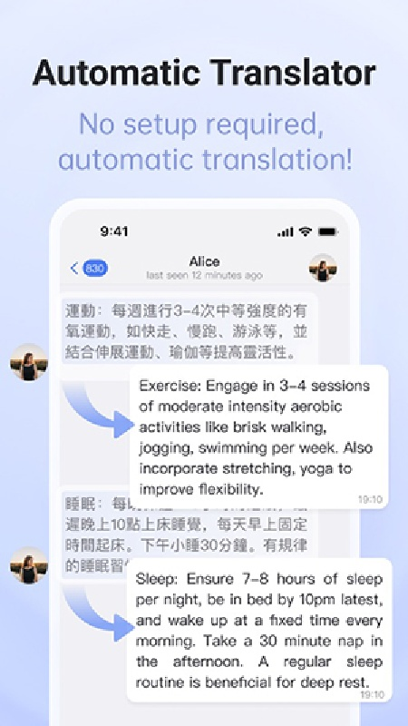

我是怎么把这款电报客户端嵌进每周信息采集工作流里的
每周要从十几个海外频道和技术群组里摘情报、翻译、整理进飞书笔记，以前三条链路手动串，现在一个客户端扛下翻译和过滤，整条链只留一个手动节点。
每周一上午我有一个固定动作：把 Telegram 上订阅的十几个海外技术频道、三个行业群组扫一遍，挑出有用的条目，翻成中文，贴进飞书的信息情报库。以前这件事要跨三个应用：官方客户端负责看和聊，浏览器插件或翻译 App 负责翻译，飞书负责归档。手动复制粘贴一天能吃掉我半小时，频道里贴片广告和骚扰消息又分散注意力。现在换成了从官方下载拿包装好的 Turrit，客户端本身就把翻译和过滤都扛了下来，整条链路只剩一个需要我手动触发的节点——归档。
旧流程：三条链路手动串，每天半小时复制粘贴
说清楚旧流程卡在哪，才能讲清新流程省了什么。以前的路径是这样的：
第一步：看频道。 官方 Telegram 客户端装好，订阅了 TechCrunch、The Verge、几个开源项目的公告频道、以及两个做海外 SaaS 情报的行业群。问题在于这些频道里偶尔会贴片广告，群组里更别提——总有几个人天天刷营销话术。我得盯着标题判断哪些该跳过，一条一条手动点开。
第二步：翻译。 遇到看不懂的外语消息，长按复制 → 打开浏览器翻译插件或单独的翻译 App → 粘贴进去 → 等翻译 → 复制翻译结果 → 回到客户端贴在脑子里对照。如果看完想回复，还得把自己要说的话再拿去翻译一遍，然后复制回来发送。来回复制至少四次，一条消息走完。频道里连续刷个十条，半小时没了。
第三步：归档。 看中的内容手动复制进飞书的情报库文档，分好类、加日期标签。这一步倒不麻烦，但前面两步让整个流程的心理负担特别大——你总觉得翻译这一步不应该存在，它不就是个"把外语显示成中文"的事吗，为什么要我手动操作这么多次。
整条链里最烦的不是哪一步慢，而是注意力被来回切：从聊天窗口跳去翻译 App，再跳回来，再跳去笔记软件。每一次切换都要把上下文重新拉回来。频道里还夹着广告和骚扰，更别说那些我不关心的营销话术，刷的时候得时刻绷着一根弦过滤噪音。
新流程：Turrit 嵌在哪一环，上下游怎么接
换成 turrit官网 上这款主打全场景翻译的客户端之后，翻译和过滤这两件事直接进了客户端本身，我不需要再跳出去。具体嵌法如下：
客户端内部就把旧的前两步合并了。 实时翻译默认跟随我的简体中文界面，外语消息直接显示翻译结果，滚动浏览时翻译内容还会跟着更新。群友聊英文我直接看懂，频道里的日语新闻也是中文呈现。发消息前有个翻译按钮，我把要说的中文敲进去，点一下就出英文翻译，确认表达没问题直接发送——这两步在同一个窗口里完成，不需要切换应用。
过滤噪音直接在客户端里解决。 之前那些广告话术、骚扰消息，现在用关键词阻止拦一层，频道广告过滤再拦一层。命中关键词的消息直接从我的时间线里消失，频道里的贴片广告也被滤掉了。群组里刷屏的那几个人，我直接让他们的消息对我不可见——不用退群、不用找管理员，自己的时间线自己说了算。频道流配合时间线功能，几十个频道的内容聚在一起刷，信息流干净一大截。
归档这一步还在客户端外，但已经是纯体力活了。 看中的消息长按收藏，回到飞书粘贴一条链接或一段摘要就行——因为我已经看懂了，不需要再翻译。
整条链路现在是这样的：
Turrit（订阅频道 + 群组消息）→ 客户端内部实时翻译 + 过滤噪音 → 长按收藏有价值内容 → 飞书情报库归档相比旧流程少了两个应用切换（翻译 App 和过滤环节），归档前也不需要任何手动复制粘贴翻译的操作。
实操里最容易断链的两个环节，怎么处理
新流程跑起来整体顺畅，但有两个地方我一开始踩了坑，后来调通了：
第一个坑：翻译语言的跟随问题。 刚装上客户端时，有些群聊里的消息始终显示原文不翻译，我翻了一下turrit文档才确认——那个群聊的目标语言被单独设成了英文（可能是我之前玩的时候不小心改的）。Turrit 允许每个聊天单独指定目标语言，不必跟全局设置走。这个设计灵活但也容易乱，我后来把所有频道和群组的目标语言统一设成简体中文，只跟几个外国朋友的私聊保持英文互译，问题就解决了。
第二个坑：AI 校准的使用边界。 有几次翻译结果明显差点意思，我点进去校准，发现 AI 校准每天有次数上限但免费。这个功能适合对准确度有要求的场合——比如要发正式消息或翻译合同片段时，拿不准就点一下。但日常刷频道不需要，实时翻译 95% 的准确率完全够用，校准留给关键消息就行。我一开始天天校准，次数用完了才发现完全没必要，后来只在要回复客户邮件时才用。

效果和边界：省了多少事，什么时候这条链不划算
算一下时间账：旧流程里我每条频道消息平均要花 20 秒——点开、判断、翻译、可能还要回复，十条就是 200 秒。新流程里同一条消息就是 5 秒滑过，看中了长按一下收藏。一周十几条频道下来，大概能省出 25 分钟的纯操作时间。更重要的是注意力成本的降低——以前每刷十分钟就要停下来擦擦注意力切换留下的"认知油污"，现在可以一口气刷完整个列表再歇。
但这条链也不是万能的，有几个场景用 Turrit 反而不划算：
- 如果你的频道里全是中文或你已经会的语言，翻译功能基本用不上，客户端的其他优势也不足以让你换掉用惯了的官方客户端。
- 如果你的工作流里有自动化归档的环节（比如用 Zapier 或飞书机器人自动同步），那归档这步也不需要手动——但 Turrit 本身不做这个，归档的自动化要在外部工具里搭。客户端只负责翻译和过滤，上下游同步还是要靠自己的笔记软件或机器人。
- AI 校准的次数有限，如果你的工作需要频繁翻译高质量的长文档，这个功能就不够用了，还是得回到专业翻译工具。日常消息回复没问题，但长文档另算。
总的来说，这套工作流适合有固定海外信息摄入需求、又不想在翻译这件事上花额外操作时间的场景——不管是看频道、聊群、还是回复外国客户，把翻译和过滤收进客户端里，上下游就能接得很顺滑。客户端安装也简单，安卓设备有谷歌商店直接搜名字装就好，认准开发者信息就行，没有谷歌服务的设备直接走 APK 安装也没问题，两条路装出来的是同一个客户端，数据互通。安装指引和翻译配置的详细说明，在 GitHub、Gitee、GitCode 三个仓库都能找到，国内网络访问也方便。